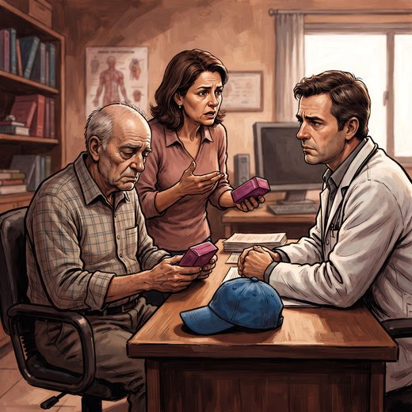

Consulta rápida à beira do leito
Condutas, doses e interações.
Referências da aula · 10
- Rzeczycki P, Pęciak O, Plust M, Droździk M. Molecular aspects of geriatric pharmacotherapy. Cells. 2025;14(17):1363. PMID 40940774. doi:10.3390/cells14171363.PubMedDOI
- Kidney Disease: Improving Global Outcomes (KDIGO) CKD Work Group. KDIGO 2024 clinical practice guideline for the evaluation and management of chronic kidney disease. Kidney Int. 2024;105(4S):S117-S314. PMID 38490803. doi:10.1016/j.kint.2023.10.018.PubMedDOI
- 2023 American Geriatrics Society Beers Criteria® Update Expert Panel. American Geriatrics Society 2023 updated AGS Beers Criteria® for potentially inappropriate medication use in older adults. J Am Geriatr Soc. 2023;71(7):2052-81. PMID 37139824. doi:10.1111/jgs.18372.PubMedDOI
- Freitas EV, Py L, organizadores. Tratado de Geriatria e Gerontologia. 5ª ed. Rio de Janeiro: Guanabara Koogan; 2022.
- Mangoni AA, Jackson SHD. Age-related changes in pharmacokinetics and pharmacodynamics: basic principles and practical applications. Br J Clin Pharmacol. 2004;57(1):6-14. PMID 14678335. doi:10.1046/j.1365-2125.2003.02007.x.PubMedDOI
- Benet LZ, Hoener BA. Changes in plasma protein binding have little clinical relevance. Clin Pharmacol Ther. 2002;71(3):115-21. PMID 11907485. doi:10.1067/mcp.2002.121829.PubMedDOI
- Edwards IR, Aronson JK. Adverse drug reactions: definitions, diagnosis, and management. Lancet. 2000;356(9237):1255-9. PMID 11072960. doi:10.1016/S0140-6736(00)02799-9.PubMedDOI
- Lindeman RD, Tobin J, Shock NW. Longitudinal studies on the rate of decline in renal function with age. J Am Geriatr Soc. 1985;33(4):278-85. PMID 3989190. doi:10.1111/j.1532-5415.1985.tb07117.x.PubMedDOI
- Cockcroft DW, Gault MH. Prediction of creatinine clearance from serum creatinine. Nephron. 1976;16(1):31-41. PMID 1244564. doi:10.1159/000180580.PubMedDOI
- Klotz U, Avant GR, Hoyumpa A, Schenker S, Wilkinson GR. The effects of age and liver disease on the disposition and elimination of diazepam in adult man. J Clin Invest. 1975;55(2):347-59. PMID 1127100. doi:10.1172/JCI107931.PubMedDOI